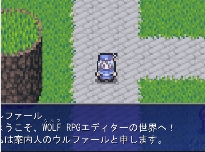
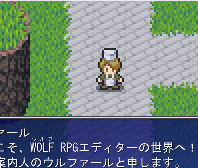
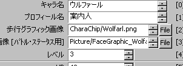
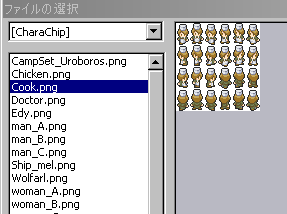

可変データベース
右のようなウィンドウが表示されます。

【目標】
サンプルゲーム内の主人公、ウルファール（青い人）の歩行グラフィックを、コックに変更してみます。
 |
→ |  |
| 【1】 可変データベース 右のようなウィンドウが表示されます。 |
|
| 【2】 「タイプ」が「主人公ステータス」に なっていることを確認してください。 （もしなっていなければ、 「0:主人公ステータス」をクリック） |
 |
| 【3】 そのまま右の方を見ると、→のような一覧が 表示されています。 すでにウルファールが選択されていますね。 ここで、「歩行グラフィック画像」の右にある 「File」ボタンをクリックしてください。 |
 |
| 【4】 「ファイルの選択」ウィンドウが表示されますので、 左の欄から、「Cook.png」を選択してください。 ※元に戻したいときは、 「Wolfarl.png」を選んで下さい。 ※左上にある[CharaChip]と書いてあるボックスで 読み込み先のフォルダを選ぶことができます。 |
 |
| 【5】 テストプレイ ウルファール（青い人）の 歩行グラフィックが コックに変わっています。 開始時のセリフはそのままなので ちょっと変ですが、何はともあれ、 主人公の歩行グラフィックを 変更することができました！ |
＜執筆者：SmokingWOLF＞